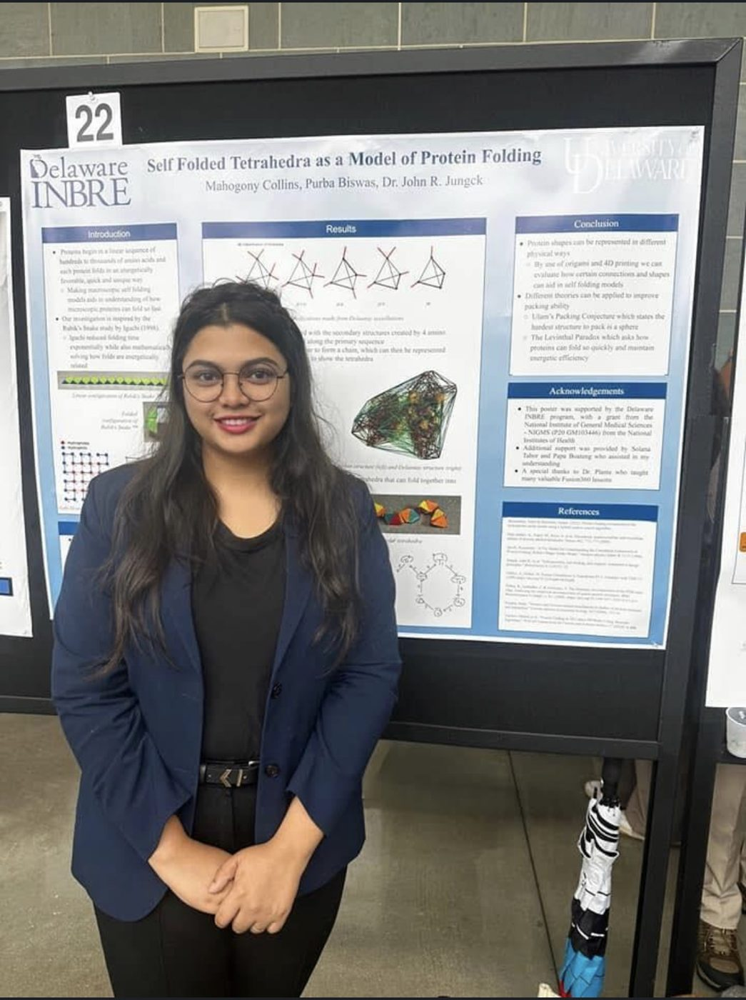

I use mathematics and data to understand complex systems, from the tilings that build viral shells and the randomness that decides whether an outbreak survives, to neural networks that forecast energy demand.
I am a PhD student in Applied Mathematics at Case Western Reserve University. My work combines graph theory and aperiodic tilings, stochastic modeling, and machine learning. I am interested in how viruses assemble, how diseases spread, and how models learned from data can make reliable predictions. My earlier work used recurrent neural networks to forecast electric energy consumption.
Before CWRU, I earned an MS in Applied Mathematics at the University of Delaware, where I worked with Prof. John R. Jungck on quasicrystalline models of viral capsids. Before that, I earned a BS and MS in Mathematics at Jahangirnagar University in Bangladesh.
I presented graph-theoretic analyses of aperiodic polykite tessellations and how they inform models of viral capsid assembly, with competitive travel funding.
Pictured with Prof. William Kath (Northwestern University, NITMB) and Prof. Reidun Twarock (University of York).
The NSF Internship Network in the Mathematical Sciences trained me in Python, statistics, and machine learning for work beyond academia. I worked on team projects with mentors Prof. Fadil Santosa and Dr. Martin-Daniel Lacasse.
3mt.jpg
Three Minute Thesis · 2026
From Patterns to Viral Shells
My research in three minutes and one slide. Watch the talk
capsid-models.jpg
Delaware · 2024–25
Tiles you can hold
Our junction analysis guided where magnets go on 3D-printed capsomere models, built with Prof. Donald Plante (UNH).
hpc-seminar.jpg
SIAM Student Chapter · Nov 2026
High-Performance Computing seminar
As chapter treasurer, I organized a seminar introducing graduate students to HPC at CWRU.
outreach.jpg
Outreach · Summer 2024
Math for high-school students
I co-led a seven-week workshop on knot theory and DNA, fractals, Voronoi diagrams, and epidemic models for students from underrepresented groups.
I review GBD 2023 manuscripts on disease burden worldwide, from brain cancer to respiratory infections. I completed IHME's Introduction to GBD course. Certificate
Research
Aperiodic tilings and viral capsids
Many viruses build their shells from repeated protein tiles. With Prof. Jungck, I model quasicrystalline capsids using the newly discovered aperiodic polykite "einstein" tiles: hats, turtles, hares, and squirrels.
Graph-theoretic classification of tessellations: Hamiltonian cycles, Heesch numbers, Delaunay triangulations
Junction types between neighboring tiles and how often they occur
polykite.png
Stochastic epidemic dynamics
Even when \(R_0 > 1\), an outbreak can die out by chance. I compare early extinction in direct-transmission (SEIR) and vector-borne (Ross–Macdonald) models at matched \(R_0\), using Gillespie simulation and branching-process theory.
epidemic.png
Machine learning and forecasting
How much electricity will a home, a city, or a country need tomorrow? With collaborators, I used recurrent neural networks to learn patterns in past energy use and predict future consumption, work that supports planning for smart homes and power grids.
Recurrent neural networks for time-series forecasting of electric energy consumption (Int. J. Smartcare Home, 2021)
Machine-learning prediction of solar energy consumption patterns (BS project)
Image processing and bioinformatics for biological data
ml.png
News
Nov 2026Organized a High-Performance Computing seminar for the SIAM Student Chapter at CWRU.
Fall 2026Teaching problem sessions for Multivariable Calculus (MATH 223).
2026Gave a Three Minute Thesis talk, From Patterns to Viral Shells. Watch
Nov 2025Became a Global Burden of Disease collaborator with IHME, reviewing GBD 2023 manuscripts.
Sep 2025Paper with John Jungck published in Mathematics.
J. R. Jungck and P. Biswas. Graph theoretic analyses of tessellations of five aperiodic polykite unitiles.Mathematics 13(18):2982, 2025.DOIOpen access
A. Rahman, T. M. M. Al Masud, and P. Biswas. Prediction of electric energy consumption using recurrent neural networks.International Journal of Smartcare Home 1(1):23–34, 2021.DOIPDF
Conference abstracts
J. R. Jungck (presenter), D. Plante, P. Biswas, and S. Brittain. Self-assembly and self-folding models of viral capsids. BEER Symposium, George Mason University, 2025.
Talks & posters
Poster · co-author
Self folded tetrahedra as a model of protein folding
M. Collins, P. Biswas, J. R. Jungck · Delaware INBRE · 2024
poster-thumb.jpg
Poster
Graph theoretic analyses of tessellations of aperiodic polykite unitiles
NSF–Simons NITMB MathBio Convergence Conference · Chicago · Aug 2025
Project: machine-learning prediction of solar energy consumption. University Merit Scholarship.
Teaching & mentoring
Teaching
Graduate Teaching Assistant, CWRU MATH 223 & MATH 201 · Fall 2025, Spring 2026, Fall 2026
Graduate Teaching Assistant, University of Delaware MATH 241 · Fall 2023, Spring 2024, Fall 2024, Spring 2025
Mentoring & outreach
Mentored three undergraduate researchers from underrepresented groups, funded by the SIAM–Simons summer program and DE-INBRE · Jungck Lab, 2024
Mentored two undergraduates in for-credit research
Co-led a seven-week summer workshop for high-school students from underrepresented groups and their teachers: knot theory and DNA, fractals, Voronoi diagrams, and epidemic models

Delaware INBRE · Summer 2024 With my mentee Mahogany Collins's poster, Self Folded Tetrahedra as a Model of Protein Folding (M. Collins, P. Biswas, J. R. Jungck), supported by Delaware INBRE.
Class President, Department of Mathematics, Jahangirnagar University · 2016–22
Joint Secretary and Board of Directors, E-Business Club, Jahangirnagar University
Member: SIAM, AMS, AWM (UD chapter), WePOWER
Training & certificates
Introduction to GBD, Institute for Health Metrics and Evaluation · certificate
Responsible Conduct of Research, CITI Program (University of Delaware) · 2025 · certificate
Tools
MATLAB
Python
R
C++
LaTeX
Beamer
Beyond research
Leadership, competitions, and activities outside the lab. Tap a photo to see it larger.
Puzzles & play
PuzzlesGamesForecasting
Why 12 pentagons?
A closed shell is tiled by hexagons and pentagons, with exactly three tiles meeting at every vertex. Show that it must contain exactly 12 pentagons, no matter how many hexagons there are.
This is why every icosahedral virus, small or enormous, has 12 five-fold vertices: the gold points on the spinning capsid at the top of this page.
Let \(p\) and \(h\) be the numbers of pentagons and hexagons, so \(F = p + h\). Each edge borders two faces and each vertex touches three, so
$$\tfrac{1}{3}(5p+6h) - \tfrac{1}{2}(5p+6h) + p + h = 2 \;\Longrightarrow\; \tfrac{p}{6} = 2 \;\Longrightarrow\; p = 12.$$
The hexagons cancel completely, so \(h\) can be anything.
Can a growing outbreak still vanish?
An outbreak starts with one infected person. Each infected person, independently, infects 2 new people with probability \(p = \tfrac34\), and nobody with probability \(\tfrac14\). On average each case causes \(R_0 = 2p = 1.5\) new cases, so the outbreak "should" grow. What is the probability that it eventually dies out?
Let \(q\) be the extinction probability. The outbreak dies out if the first case infects nobody, or infects two people whose separate outbreaks both die out:
Branching-process theory says the extinction probability is the smallest root in \([0,1]\), so \(q = \tfrac13\). Even with \(R_0 > 1\), one outbreak in three disappears by chance. Try it in the outbreak game.
Counting the pieces of a virus
In Caspar–Klug theory, an icosahedral capsid with triangulation number \(T\) is built from \(60T\) identical proteins, grouped into 12 pentamers (5 proteins each) and some number of hexamers (6 proteins each). How many hexamers are there? How many for \(T = 3\)?
Count proteins two ways. If there are \(H\) hexamers,
$$60T = 5\cdot 12 + 6H \;\Longrightarrow\; H = 10(T-1).$$
For \(T = 3\): \(180\) proteins, \(12\) pentamers and \(20\) hexamers. Allowed values are \(T = h^2 + hk + k^2\) for whole numbers \(h, k\), so \(T = 1, 3, 4, 7, 9, 12, 13, \dots\) See them in 3D in the virus shells game.
Outbreak simulator
Each case infects a random number of new people with mean \(R_0\) (Poisson). Run 100 outbreaks and see how many die out by chance, compared with branching-process theory.
–died out in simulation
–predicted by theory
Virus shells in 3D
Many viruses protect their genome with a shell built from copies of one protein, grouped into pentamers and hexamers. Pick a size and drag the shell to spin it. Every shell has exactly 12 pentamers (gold); bigger viruses just add more hexamers.
1triangulation number T
12pentamers
0hexamers
60proteins (60T)
Guess the \(R_0\)
A random outbreak spreads through a town of 1,000 people (a stochastic SIR model). Look at the curve of infected people and guess how contagious the disease was.
0 / 0correct guesses
0current streak
Darts for \(\pi\)
Throw random darts at a square with a circle inside. The fraction that lands in the circle is about \(\pi/4\), so four times that fraction estimates \(\pi\). This is the Monte Carlo idea behind stochastic simulation.
0darts thrown
–estimate of π
–error
Grow the hat tiling
The hat is an "einstein": one tile that covers the plane, but never periodically. Hats group into four metatiles, H, T, P and F, and every click groups those into bigger supertiles of the same four kinds. Gold hats are the mirror-image ones.
1supertile level
4hats
1mirror-image hats
Hat discovered by D. Smith, J. S. Myers, C. S. Kaplan and C. Goodman-Strauss (2023). Supertile construction adapted from Craig S. Kaplan's hatviz (BSD-3-Clause).
Beat the forecaster
Here are three days of a home's hourly electricity use. Draw your forecast for the next 24 hours in the shaded area (drag across it), then reveal the real values. A simple model forecasts too: it averages the same hour over the last three days.
Drag in the shaded area to draw your forecast.
–your average error (kW)
–model's average error (kW)
0 – 0you vs model
How far back should the model look?
A forecasting model predicts the next hour from the last \(L\) hours (a linear autoregressive model, fitted to three weeks of data). Slide \(L\) and watch the two-day test forecast. Recurrent neural networks are built to keep this kind of memory of the past.
–average error (kW)
–best so far
Watch a network learn
A small neural network (24 inputs, 10 hidden neurons) learns to predict the next hour from the previous 24. Press Train and watch its forecast (gold) move toward the real data as the error falls. My paper used recurrent networks, a version built for sequences, but the learning idea is the same.